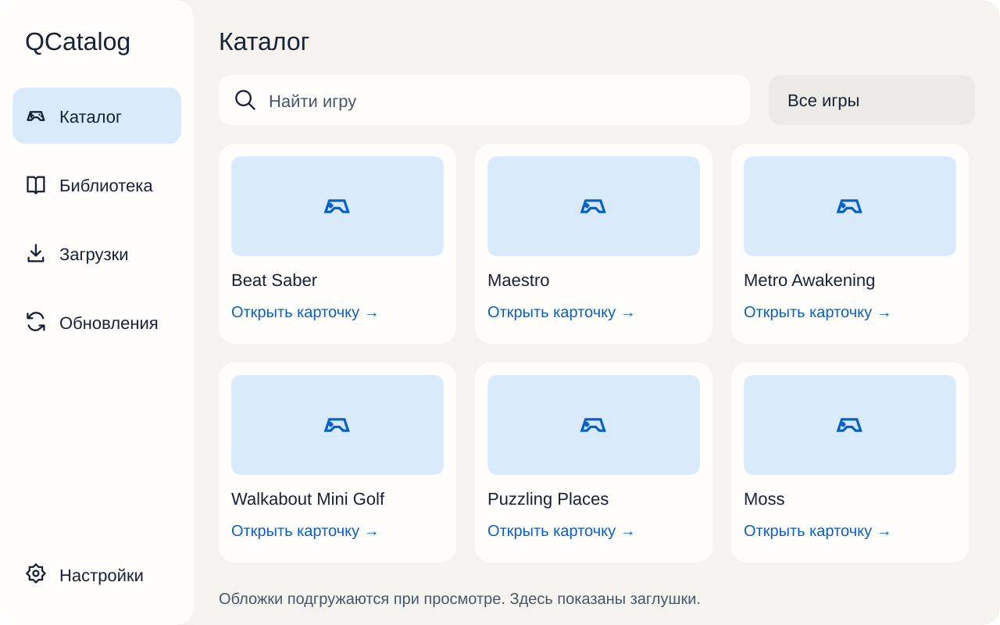
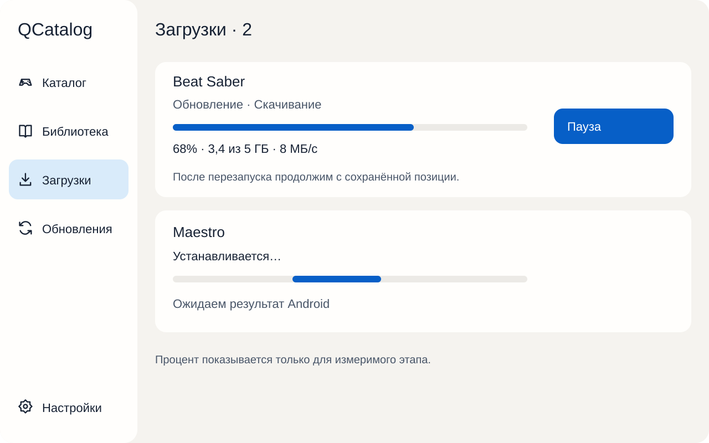
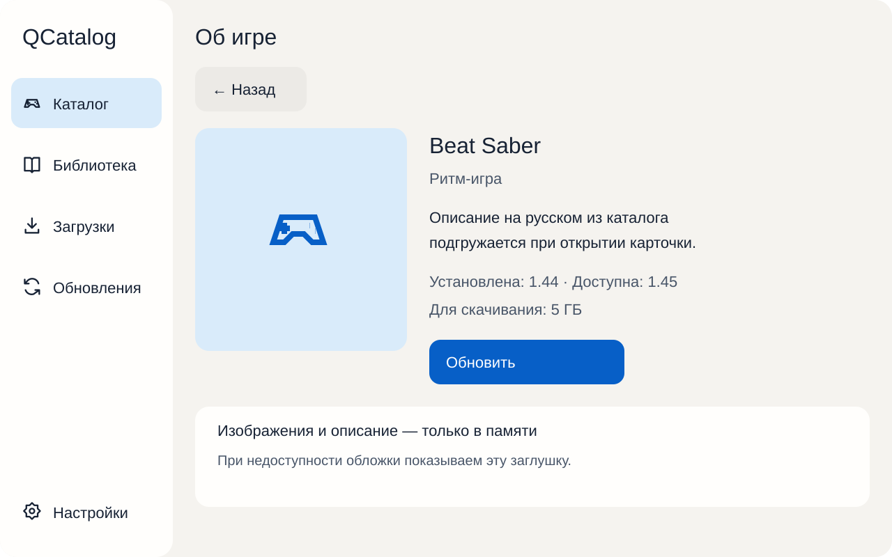
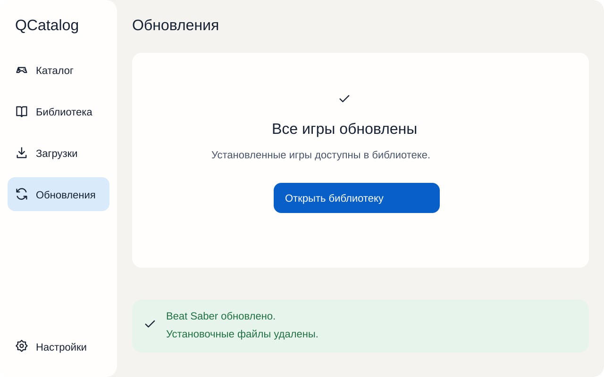
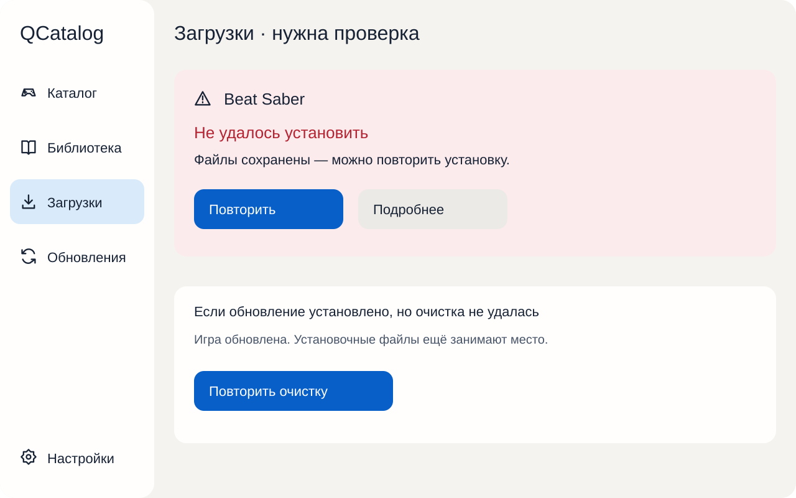

QCatalog · Вариант 02 · Карточки
Редактируемые макеты, версия 1.0.0. Это спецификация будущего интерфейса, а не работающая версия приложения. Заглушки вместо вымышленных обложек. Все числовые данные демонстрационные.
01 — Каталог

02 — Загрузки и установка

03 — Карточка игры

04 — Успешное обновление

05 — Ошибка установки и ошибка очистки
